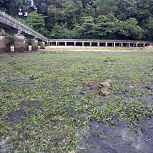
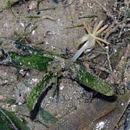
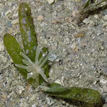
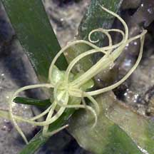
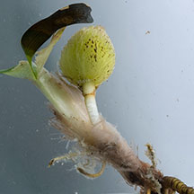
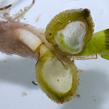
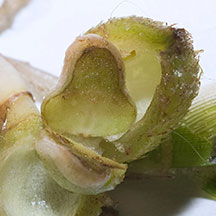
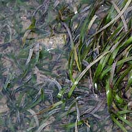
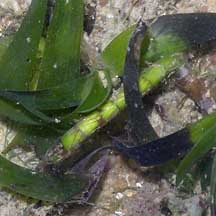

|
|
| seagrasses text index | photo index |
| Seagrasses > Family Hydrocharitaceae |
| Sickle
seagrass Thalassia hemprichii Family Hydrocharitaceae updated Oct 2016
Where seen? This seagrass only abundant on Labrador, which has quite a large patch. On Chek Jawa, it is found in small patches. The preliminary results of a transact survey of Chek Jawa suggest it is found mainly in the centre of the seagrass lagoon there. On some of our Southern Islands, there are also scattered patches of this seagrass. Sickle seagrass is found throughout the tropical Indo-West Pacific region. A firmly-anchored seagrass, it can form large beds. It is found from shallow subtidal areas to 10m and deeper. It does not tolerate long periods of exposure and does not appear to do well in areas with freshwater runoff. Features: The seagrass has strap or curved, sickle-shaped leaves (0.5-1cm wide and 7-40cm long, usually less than 25cm). The tips are usually rounded and smooth. The leaves may appear speckled due to tannin cells that appear red, purple or dark brown. Those in Singapore often have cross hatching on the long veins. It has thick rhizomes (underground stems) about 2-4mm in diameter which are white or pink. The rhizomes have air channels and usually have obvious node scars that are triangular with persistent leaf sheaths. Shoots emerge from these rhizomes, each shoot with 2-6 leaves encased in sheaths about 3-8cm long. This seagrass has separate male and female plants. The flowers form at the base of the shoot and is hidden by the sheath until they emerge. The male flower is held on a long stalk, maturing into 6 or more parts. The female flower appears similar but has a finer texture. Fruits are oval and prickly, containing up to 9 tiny seeds. Some studies suggest that this seagrass flowers less infrequently than other seagrasses. It also produces relatively larger fruits. Sometimes confused with other ribbon-like seagrasses. Here's more on how to tell apart ribbon-like seagrasses. Role in the habitat: Algae often grow thickly on the leaves, colouring the leaves white or pink. These are eaten by small grazing creatures like snails. Among the animals that eat this seagrass are dugongs and green turtles. So it is also sometimes called Dugong grass or Turtle grass. Status and threats: It is listed as 'Critically Endangered' on the Red List of threatened plants of Singapore. |
 Labrador, Nov 05  With flowers! Labrador, Mar 06  Cyrene Reef, Oct 07  Tip rounded not serrated, cross-hatching on the long veins. Cyrene Reef, Aug 11 |
|
 Flowering plant. Pulau Semakau, Apr 08 |
 Flowering plant. Cyrene Reef, Mar 07 |
 Flowering plant. Labrador, Mar 06 |
 Fruit. Cyrene, Jan 12 |
 Fruit. Cyrene, Jan 12 |
 Fruit. Cyrene, Jan 12 |
|
 Shorter Sickle seagrass next to longer Tape seagrass Labrador, Jun 03 |
 Leaves covered with other plants and animals Labrador, Oct 04 |
 Thick underground stem Labrador, May 05 |
| Sickle seagrass on Singapore shores |
On wildsingapore
flickr
|
Links
|
|
You CAN make a difference for Singapore's seagrasses!  |